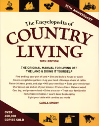

If you have ever contemplated moving to the country, homesteading or simply becoming more self-reliant, The Encyclopedia of Country Living will inspire you to make the move and give you proven advice. This tenth edition contains 922 pages of recipes, resources, and firsthand experiences of the author - and many of the 650,000 who have purchased previous editions of the book.
Emery grew up on a Montana ranch and was already familiar with many of the farm and self-sufficiency skills needed to raise a family in rural Idaho. She and her husband, Mike, were also committed to providing as much of the family’s food as possible and raising their five children with a strong work ethic and an appreciation for thriftiness. Carla wrote the first edition of the book over a period of four years, starting in 1970, then published (using a mimeograph machine) and marketed the book herself.
She conceived the contents of the book after reading letters to the editor in Organic Gardening requesting information on canning, raising chickens and milking a cow. In a May 1975 interview, Carla said, “What these people needed was a book. A great, large book like an encyclopedia that tells everything you need to know to raise your own food and process it and raise food for animals and so on. A big, dependable guide to self-sufficiency that's written simply and clearly.” And that is what she did - while raising five children and helping her husband run the farm.
The “Table of Contents” is a sedate list of topics that does nothing to alert the reader as to the depth of the content found in each chapter. The first chapter, “Oddments,” covers choosing and buying land, schools of country living, looking for love, home births, caring for your dead, backwoods (primitive) housekeeping, quilting, candlestick making … and more.
Chapter three, “Grasses, Grains & Canes,” tells how to plant, harvest and cook with all of the standard grains plus a few you might not be familiar with - millet, quinoa and spelt. And if you want to know how to grow and prepare culinary and medicinal herb, plus the best flavorings for your home-cooked meals, chapter five on herbs and flavorings, from ajwain to yucca, is sure to be a favorite. And this tenth edition of the book includes 22 pages of self-sufficiency resources: magazines, books, mail-order companies, renewable energy resources and emergency preparedness suppliers to assist you in your self-reliant life.
Every chapter is filled with practical, how-to advice along with the author’s personal successes and failures along the way. One of the best comes from the chapter on children and clothing - let the clothes get really dirty before you wash them. It will save you time and money and the clothes will last longer!
There are home remedies for ailments of chickens, cows and children, and suggestions on knowing when it’s time to get professional help. You can find instructions on canning, churning butter and making ice cream. And sprinkled throughout the book are skills such as pruning trees, sharpening an axe, delivering a calf and building a chicken coop.
The book costs $29.95. That comes to just three cents a page, making it a very economical, long-term investment. We highly recommend you give it a read. If you’re interested in ordering the book, click here.
|
TALAVIETIS/FOTOLIA.COM Meander through the pages of The Encyclopedia of Country Living to discover the satisfaction of becoming self-sufficient. |
 SASQUATCH BOOKS This wonderful book, The Encyclopedia of Country Living, contains 922 pages of self-sufficiency, country skills and homesteading wisdom, plus up-to-date Web site resources. |
|